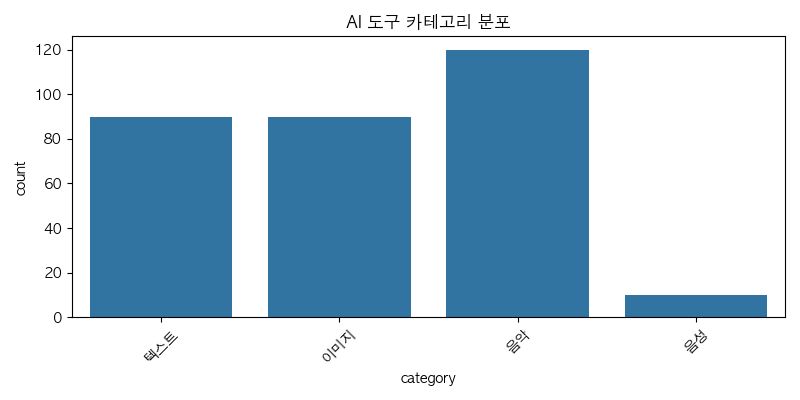
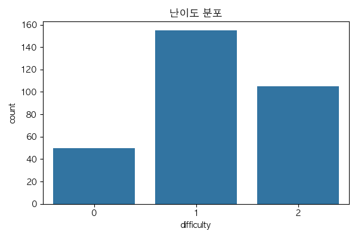

import pandas as pd
# 데이터 불러오기
df = pd.read_csv('ai_tools.csv')
html_table = df.head(10).to_html(index=False)
# HTML 템플릿 작성
html_content = f"""
AI 도구 시각화 결과
🧠AI 도구 시각화 결과
📊 ì¹´í…Œê³ ë¦¬ 분포

📊 난이도 분포

📋 AI 도구 상위 10개 목록
{html_table}
"""
# HTML로 ì €ì¥
with open('visualization_result.html', 'w', encoding='utf-8') as f:
f.write(html_content)
print("✅ visualization_result.html 파일이 생성되었습니다.")